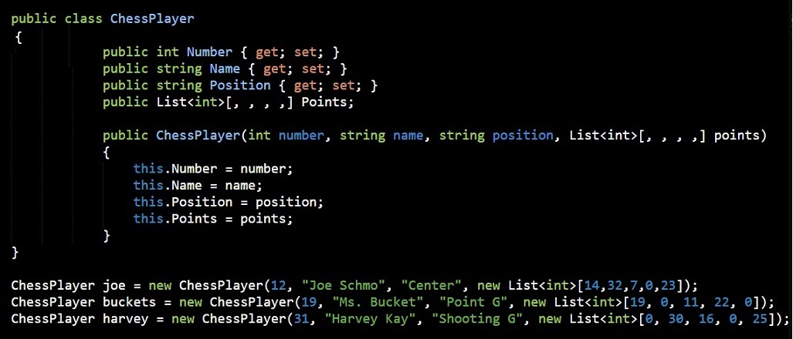
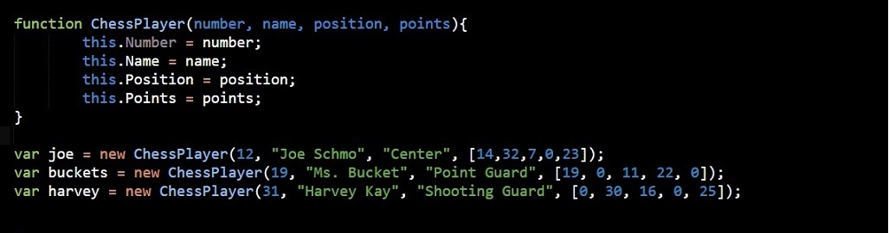

C# vs JavaScript Object Constructors
My Aha! moment for today
10 February, 2015 by Sandra Muller in Blog Posts
So today I had an Aha! moment with regards to Object Constructors. I had never programmed one in C# before, but found myself needing to do so. I have coded a few in JavaScript though. I was absolutely amazed by the similarities between the object constructors and even more excited about my ability to transfer my knowledge!
It's an excellent example of how you can learn to program and transfer that knowledge between the languages. Below is the code for C# and then JavaScript. They produce the same results.
C# Object Constructor

JavaScript Object Constructor

I think JavaScript wins in its simplicity, but they are both rocking languages and so functional in their own way.